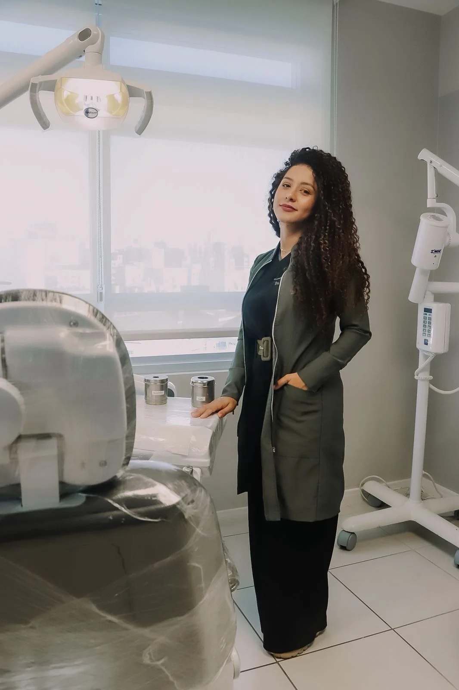
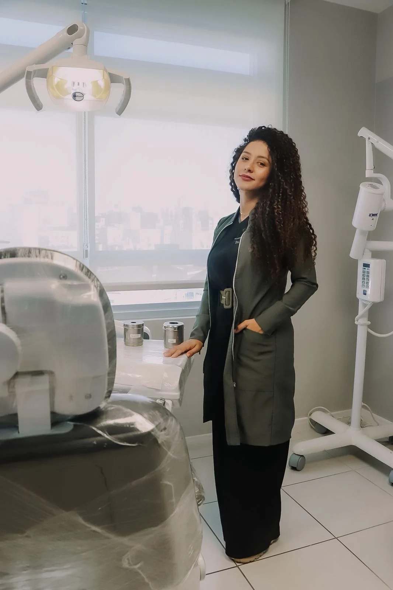

Implante Dentário e Prótese Fixa em Florianópolis
Recupere seu sorriso, mastigação e autoestima com segurança, tecnologia e atendimento humanizado.
Sobre a Dra. Priscila Andrade
A Dra. Priscila Andrade atua com foco em implantes dentários, prótese fixa e reabilitação oral, oferecendo tratamentos modernos, seguros e personalizados.
Tratamentos Odontológicos
- Implante Dentário: solução segura para substituir dentes perdidos.
- Prótese Fixa: estética natural e conforto.
- Reabilitação Oral: função e estética em harmonia.
- Dentista 24h: atendimento de urgência.
Conheça nosso atendimento
Perguntas Frequentes
O implante dentário dói?
O procedimento é realizado com anestesia e é seguro.
Atende convênios?
Não. Atendimento exclusivamente particular.
Quanto tempo dura o tratamento?
Depende de cada caso, avaliado em consulta.
Galeria de Fotos


 

Localização
Rua Padre Roma, Nº 482, sala 104
Centro – Florianópolis / SC
Agende sua avaliação
Atendimento pelo WhatsApp:
(48) 99130-2076